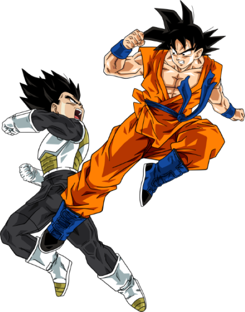

Dragon Ball
Dragon Ball
Super
Goku attains a new form known as Ultra Instinct, allowing him to fight unconsciously. The tournament ends with Goku and Frieza eliminating Jiren along with themselves, leaving Android 17 as the winner for Universe 7. He is awarded one wish from the Super Dragon Balls, and restores the erased universes.